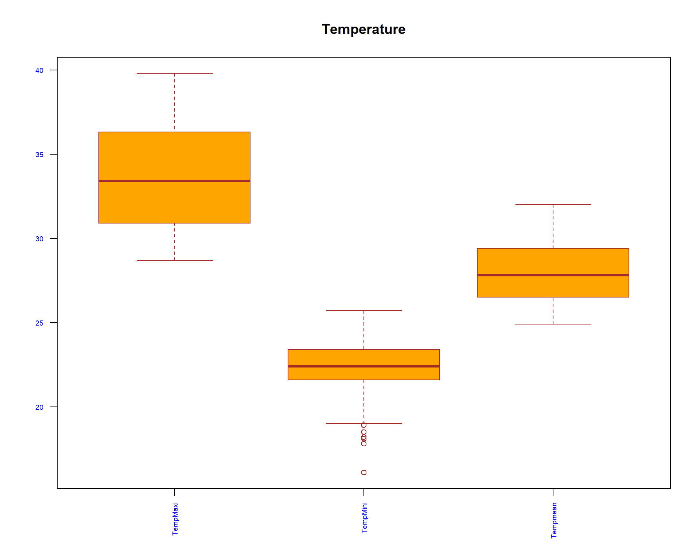
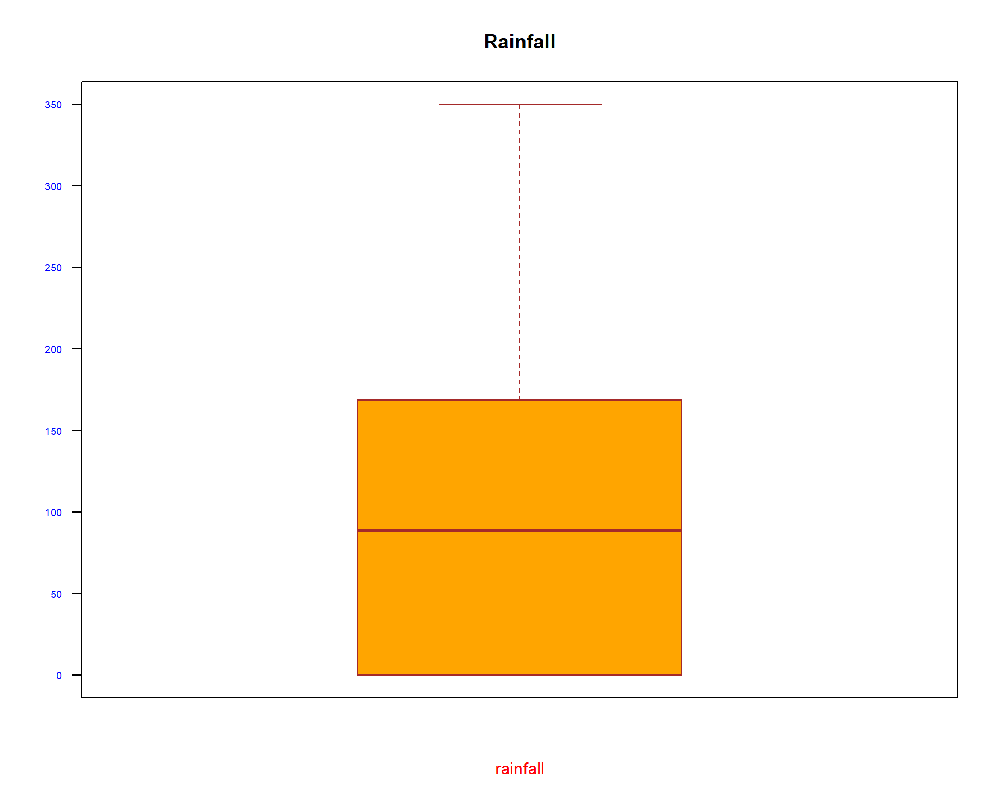
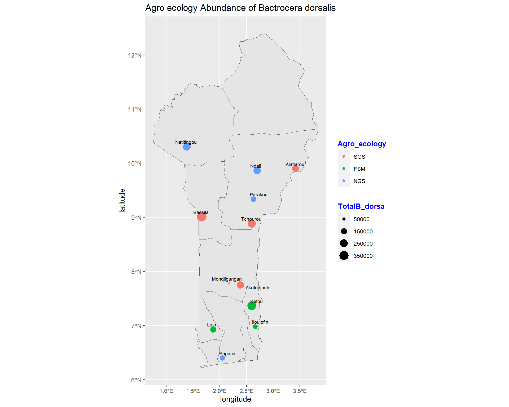

Spatio-Temporal patterns of Bactrocera-dorsalis
1 Introduction
1.1 Overview
Bactrocera dorsalis is one of the most invasive species of the family of tephritid fruit flies and those of the genus Bactrocera. Previous studies from Benin have revealed that it is the most abundant species. Moreover, studies have also shown that it is a very damaging pest causing harm to most of the crops in countries where it is found. A great need for the study of spatial and temporal characteristics is required to provide more information on the management of this pest.
The study area will be the three agro-ecologies found in Benin which covers an area of 114763 square kilometers. Benin is a West African country that borders Togo to the West, Nigeria to the East and Burkina Faso and Niger to the North. The three agro-ecologies included in the study are: Forest Savannah Mosaic, Northern Guinea Savannah and Southern Guinea Savannah. The Forest Savannah Mosaic extends to the Coast of Benin and separates the upper and lower Guinean forests. The sites in Forest Savannah Mosaic that are under consideration are: Iloulofin, Ketou, and Lalo. Subsequently, in Northern Guinea Savannah Natitingou, Ndali, Parakou and Papatia are the sites considered. In Southern Guinea Savannah, Akofoudjole, Alifarou, Bassila, Mondjigagan, and Tchourou are considered.
1.2 Dataset
This study considers data that was collected over a period of six years (2004-2010) in Benin, West Africa and was obtained from International Centre of Insect Physiology and Ecology (ICIPE). The data is from three agro-ecologies Northern Guinea Savanna (NGS), Southern Guinea Savanna (SGS) and Forest Savanna Mosaic (FSM). The dependent variable under consideration is the mean abundance of Bactrocera dorsalis and the independent variables will be temperature mean, rainfall and relative humidity.
1.3 Objectives
Determine the spatio-temporal patterns of the abundance of Bactrocera dorsalis in Benin.
Determine the mean abundance of Bactrocera dorsalis during the different seasons (Rainy - May to September; Dry - October to April) across the three agro-ecologies (Forest Savannah Mosaic, Northern Guinea Savannah, Southern Guinea Savannah).
Determine the seasonal effect on the mean abundance of Bactrocera dorsalis in Benin.
Map the abundance and seasonal effect variation of Bactrocera dorsalis in Benin in the three agro-ecologies. Mapping will be based on the two seasons in Benin and the three agro-ecologies over the period of 6 years that the data was collected. The spatial distribution within the time period will be shown across the three agro-ecologies during the different seasons. The mapping will be done separately for each of the two seasons and in each agro-ecology. Each agro-ecology will be mapped in accordance with the data collection sites.Geo-referencing will be done to obtain the coordinates of the different sites in the three agro-ecologies. Before geo-referencing, the sites which are replicated will first be made the same so that that they can be georeferenced only once
2 Data Exploration
2.1 loading Relevant packages and Data Set
#Import relevant packages
library(tidyverse)
library(janitor)
library(readr)
library(plotly)
library(knitr)2.2 loading Data Set
# Reading our dataset
spacioTemp_dt_raw <- read_csv('https://raw.githubusercontent.com/reinpmomz/Spatio-Temporal_patterns_Bactrocera-dorsalis/master/data/Male_lures.csv')
#View(spacioTemp_dt_raw)2.3 Adding columns and converting to factors
#Add tempeaturemean, humididy mean and Season columns
spacioTemp_dt <- spacioTemp_dt_raw%>%
mutate(Tempmean = round((TempMaxi + TempMini)/2,1))%>%
mutate(RHmean = round((RHMaxi + RHMini)/2,1))%>%
mutate(Season = if_else(Month == "May" | Month == "June" | Month == "July" |
Month == "August" | Month == "September", "Rainy","Dry"))%>%
mutate(Season= factor(Season, levels = c("Dry", "Rainy")))%>%
mutate(Agro_ecology = factor(Agro_ecology, levels = c("SGS","FSM","NGS")))%>%
mutate(Month = ordered(Month, levels = c("January","February","March", "April","May","June",
"July","August","September", "October","November","December")))%>%
mutate(Site = gsub("Alafiarou1", "Alafiarou", Site))%>%
mutate(Site = gsub("Alafiarou2", "Alafiarou", Site))%>%
mutate(Site = gsub("Tchourou1", "Tchourou", Site))%>%
mutate(Site = gsub("Tchourou2", "Tchourou", Site))%>%
mutate(across(c(Site), as.factor))2.4 Structure of the Data
head(spacioTemp_dt)## # A tibble: 6 x 17
## Agro_ecology Site Month Year TempMaxi TempMini RHMaxi RHMini Rainfall
## <fct> <fct> <ord> <dbl> <dbl> <dbl> <dbl> <dbl> <dbl>
## 1 SGS Akofodjoule Octob~ 2008 33 22.7 94 56.5 122.
## 2 SGS Akofodjoule Octob~ 2008 33 22.7 94 56.5 122.
## 3 SGS Akofodjoule Septe~ 2005 30.6 22.3 97 67 136.
## 4 FSM Ketou July 2008 29.8 22.6 96.5 67.1 0
## 5 FSM Ketou July 2008 29.8 22.6 96.5 67.1 0
## 6 FSM Lalo July 2008 29.8 22.6 96.5 67.1 0
## # ... with 8 more variables: Attractant <chr>, Trap <dbl>, B_dorsa <dbl>,
## # latitude <dbl>, longitude <dbl>, Tempmean <dbl>, RHmean <dbl>, Season <fct>tail(spacioTemp_dt)## # A tibble: 6 x 17
## Agro_ecology Site Month Year TempMaxi TempMini RHMaxi RHMini Rainfall
## <fct> <fct> <ord> <dbl> <dbl> <dbl> <dbl> <dbl> <dbl>
## 1 NGS Natitingou August 2006 29.7 22.1 29.7 22.1 253
## 2 NGS Natitingou August 2006 29.7 22.1 29.7 22.1 253
## 3 FSM Ketou Novemb~ 2008 34.4 24.1 25.7 47.4 0
## 4 FSM Ketou Novemb~ 2008 34.4 24.1 25.7 47.4 0
## 5 FSM Lalo Novemb~ 2008 34.4 24.1 25.7 47.4 7.5
## 6 FSM Lalo Novemb~ 2008 34.4 24.1 25.7 47.4 7.5
## # ... with 8 more variables: Attractant <chr>, Trap <dbl>, B_dorsa <dbl>,
## # latitude <dbl>, longitude <dbl>, Tempmean <dbl>, RHmean <dbl>, Season <fct># How many variables and observations are there?
ncol(spacioTemp_dt)## [1] 17nrow(spacioTemp_dt)## [1] 1166#learn more about the dataset
#help(spacioTemp_dt)
#??spacioTemp_dt
str(spacioTemp_dt)## tibble [1,166 x 17] (S3: tbl_df/tbl/data.frame)
## $ Agro_ecology: Factor w/ 3 levels "SGS","FSM","NGS": 1 1 1 2 2 2 2 3 3 3 ...
## $ Site : Factor w/ 12 levels "Akofodjoule",..: 1 1 1 5 5 6 6 8 8 8 ...
## $ Month : Ord.factor w/ 12 levels "January"<"February"<..: 10 10 9 7 7 7 7 8 8 8 ...
## $ Year : num [1:1166] 2008 2008 2005 2008 2008 ...
## $ TempMaxi : num [1:1166] 33 33 30.6 29.8 29.8 29.8 29.8 29.4 29.4 29.4 ...
## $ TempMini : num [1:1166] 22.7 22.7 22.3 22.6 22.6 22.6 22.6 21.3 21.3 21.3 ...
## $ RHMaxi : num [1:1166] 94 94 97 96.5 96.5 96.5 96.5 96.1 96.1 96.1 ...
## $ RHMini : num [1:1166] 56.5 56.5 67 67.1 67.1 67.1 67.1 70.8 70.8 70.8 ...
## $ Rainfall : num [1:1166] 122 122 136 0 0 ...
## $ Attractant : chr [1:1166] "ME" "ME" "ME" "ME" ...
## $ Trap : num [1:1166] 1 2 1 1 2 1 2 1 2 3 ...
## $ B_dorsa : num [1:1166] 130 80 497 7758 5867 ...
## $ latitude : num [1:1166] 7.75 7.75 7.75 7.36 7.36 ...
## $ longitude : num [1:1166] 2.38 2.38 2.38 2.6 2.6 ...
## $ Tempmean : num [1:1166] 27.9 27.9 26.5 26.2 26.2 26.2 26.2 25.4 25.4 25.4 ...
## $ RHmean : num [1:1166] 75.2 75.2 82 81.8 81.8 81.8 81.8 83.4 83.4 83.4 ...
## $ Season : Factor w/ 2 levels "Dry","Rainy": 1 1 2 2 2 2 2 2 2 2 ...#class(spacioTemp_dt)
#typeof(spacioTemp_dt)
#length(spacioTemp_dt)
names(spacioTemp_dt) #display variable names## [1] "Agro_ecology" "Site" "Month" "Year" "TempMaxi"
## [6] "TempMini" "RHMaxi" "RHMini" "Rainfall" "Attractant"
## [11] "Trap" "B_dorsa" "latitude" "longitude" "Tempmean"
## [16] "RHmean" "Season"#attributes(spacioTemp_dt) names(spacioTemp_dt), class(spacioTemp_dt), row.names(spacioTemp_dt)2.5 Missing data and Outliers
which(!complete.cases(spacioTemp_dt))## integer(0)which(is.na(spacioTemp_dt$B_dorsa)) #check for missing values## integer(0)There were no missing values in our data set.
2.6 Outliers
#We use boxplot to visualize for any outliers
boxplot(spacioTemp_dt [, c("TempMaxi", "TempMini", "Tempmean")], main="Temperature",
xlab="",
ylab="",
col="orange",
border="brown", las = 2, cex.axis = 0.6, col.axis = 'blue', col.lab = 'red')
boxplot(spacioTemp_dt [, c("RHMaxi",
"RHMini", "RHmean")], main="Relative Humidity",
xlab="",
ylab="",
col="orange",
border="brown", las = 2, cex.axis = 0.6, col.axis = 'blue', col.lab = 'red')
boxplot(spacioTemp_dt [, c("B_dorsa")], main="Bactrocera dorsalis",
xlab="",
ylab="Abundance",
col="orange",
border="brown", las = 2, cex.axis = 0.6, col.axis = 'blue', col.lab = 'red')
boxplot(spacioTemp_dt [, c("Rainfall")], main="Rainfall",
xlab="rainfall",
ylab="",
col="orange",
border="brown", las = 2, cex.axis = 0.6, col.axis = 'blue', col.lab = 'red') ## Univariate
2.6.1 Normality of continous variables
There are several methods for normality test such as Kolmogorov-Smirnov (K-S) normality test and Shapiro-Wilk’s test.
Shapiro-Wilk’s method is widely recommended for normality test and it provides better power than K-S. It is based on the correlation between the data and the corresponding normal scores.
If the p-value > 0.05, it implies that the distribution of the data are not significantly different from normal distribution. In other words, we can assume the normality.
shapiro.test(spacioTemp_dt$TempMaxi)##
## Shapiro-Wilk normality test
##
## data: spacioTemp_dt$TempMaxi
## W = 0.95575, p-value < 2.2e-16shapiro.test(spacioTemp_dt$TempMini)##
## Shapiro-Wilk normality test
##
## data: spacioTemp_dt$TempMini
## W = 0.9708, p-value = 1.393e-14shapiro.test(spacioTemp_dt$RHMaxi)##
## Shapiro-Wilk normality test
##
## data: spacioTemp_dt$RHMaxi
## W = 0.72721, p-value < 2.2e-16shapiro.test(spacioTemp_dt$RHMini)##
## Shapiro-Wilk normality test
##
## data: spacioTemp_dt$RHMini
## W = 0.89575, p-value < 2.2e-16shapiro.test(spacioTemp_dt$Rainfall)##
## Shapiro-Wilk normality test
##
## data: spacioTemp_dt$Rainfall
## W = 0.88999, p-value < 2.2e-16shapiro.test(spacioTemp_dt$B_dorsa)##
## Shapiro-Wilk normality test
##
## data: spacioTemp_dt$B_dorsa
## W = 0.60906, p-value < 2.2e-16shapiro.test(spacioTemp_dt$Tempmean)##
## Shapiro-Wilk normality test
##
## data: spacioTemp_dt$Tempmean
## W = 0.95547, p-value < 2.2e-16shapiro.test(spacioTemp_dt$RHmean)##
## Shapiro-Wilk normality test
##
## data: spacioTemp_dt$RHmean
## W = 0.86416, p-value < 2.2e-162.6.2 Descriptive Statistics
library(gtsummary)
library(flextable)
set_gtsummary_theme(list(
"tbl_summary-fn:percent_fun" = function(x) style_percent(x, digits = 1),
"tbl_summary-str:categorical_stat" = "{n} ({p}%)"
))
# Setting `Compact` theme
theme_gtsummary_compact()# make dataset with variables to summarize
tbl_summary(spacioTemp_dt%>%
dplyr::select(-Attractant, -latitude, -longitude),
type = list(
c(Year, Trap) ~ "categorical",
all_dichotomous() ~ "categorical",
all_continuous() ~ "continuous2")
, statistic = all_continuous() ~ c(
"{mean} ({sd})",
"{median} ({p25}, {p75})",
"{min}, {max}")
, digits = all_continuous() ~ 2
, missing = "always" # don't list missing data separately
,missing_text = "Missing"
) %>%
modify_header(label = "**Descriptives**") %>% # update the column header
bold_labels() %>%
italicize_levels()%>%
add_n() # add column with total number of non-missing observations| Descriptives | N | N = 1,1661 |
|---|---|---|
| Agro_ecology | 1,166 | |
| SGS | 489 (41.9%) | |
| FSM | 195 (16.7%) | |
| NGS | 482 (41.3%) | |
| Missing | 0 | |
| Site | 1,166 | |
| Akofodjoule | 129 (11.1%) | |
| Alafiarou | 100 (8.58%) | |
| Bassila | 145 (12.4%) | |
| Iloulofin | 15 (1.29%) | |
| Ketou | 98 (8.40%) | |
| Lalo | 82 (7.03%) | |
| Mondjigangan | 15 (1.29%) | |
| Natitingou | 145 (12.4%) | |
| Ndali | 157 (13.5%) | |
| Papatia | 82 (7.03%) | |
| Parakou | 98 (8.40%) | |
| Tchourou | 100 (8.58%) | |
| Missing | 0 | |
| Month | 1,166 | |
| January | 85 (7.29%) | |
| February | 89 (7.63%) | |
| March | 91 (7.80%) | |
| April | 102 (8.75%) | |
| May | 115 (9.86%) | |
| June | 115 (9.86%) | |
| July | 116 (9.95%) | |
| August | 116 (9.95%) | |
| September | 84 (7.20%) | |
| October | 84 (7.20%) | |
| November | 84 (7.20%) | |
| December | 85 (7.29%) | |
| Missing | 0 | |
| Year | 1,166 | |
| 2004 | 1 (0.09%) | |
| 2005 | 34 (2.92%) | |
| 2006 | 81 (6.95%) | |
| 2007 | 185 (15.9%) | |
| 2008 | 228 (19.6%) | |
| 2009 | 372 (31.9%) | |
| 2010 | 265 (22.7%) | |
| Missing | 0 | |
| TempMaxi | 1,166 | |
| Mean (SD) | 33.65 (3.02) | |
| Median (IQR) | 33.40 (30.90, 36.30) | |
| Range | 28.70, 39.80 | |
| Missing | 0 | |
| TempMini | 1,166 | |
| Mean (SD) | 22.42 (1.54) | |
| Median (IQR) | 22.40 (21.60, 23.40) | |
| Range | 16.10, 25.70 | |
| Missing | 0 | |
| RHMaxi | 1,166 | |
| Mean (SD) | 84.11 (16.23) | |
| Median (IQR) | 92.00 (77.00, 95.00) | |
| Range | 25.70, 97.00 | |
| Missing | 0 | |
| RHMini | 1,166 | |
| Mean (SD) | 48.16 (17.71) | |
| Median (IQR) | 55.00 (33.00, 64.00) | |
| Range | 12.90, 72.20 | |
| Missing | 0 | |
| Rainfall | 1,166 | |
| Mean (SD) | 100.30 (96.08) | |
| Median (IQR) | 88.40 (0.00, 168.70) | |
| Range | 0.00, 349.70 | |
| Missing | 0 | |
| Trap | 1,166 | |
| 1 | 483 (41.4%) | |
| 2 | 430 (36.9%) | |
| 3 | 253 (21.7%) | |
| Missing | 0 | |
| B_dorsa | 1,166 | |
| Mean (SD) | 1,988.30 (3,521.78) | |
| Median (IQR) | 416.00 (67.00, 2,315.00) | |
| Range | 0.00, 31,769.00 | |
| Missing | 0 | |
| Tempmean | 1,166 | |
| Mean (SD) | 28.04 (1.82) | |
| Median (IQR) | 27.80 (26.50, 29.40) | |
| Range | 24.90, 32.00 | |
| Missing | 0 | |
| RHmean | 1,166 | |
| Mean (SD) | 66.13 (16.04) | |
| Median (IQR) | 73.00 (53.00, 79.40) | |
| Range | 22.00, 83.60 | |
| Missing | 0 | |
| Season | 1,166 | |
| Dry | 620 (53.2%) | |
| Rainy | 546 (46.8%) | |
| Missing | 0 | |
| 1 n (%) | ||
2.7 Bivariate analysis
2.7.1 Difference Frequency table
# make dataset with variables to summarize
tbl_summary(spacioTemp_dt%>%
dplyr::select(Agro_ecology, TempMaxi, TempMini, RHMaxi, RHMini, Rainfall,
B_dorsa, Tempmean, RHmean),
by = Agro_ecology,
type = list(
all_continuous() ~ "continuous2")
, statistic = all_continuous() ~ c(
"{mean} ({sd})",
"{median} ({p25}, {p75})",
"{min}, {max}")
, digits = all_continuous() ~ 2
, missing = "ifany" # don't list missing data separately
,missing_text = "Missing"
) %>%
modify_header(label = "**Variables**") %>% # update the column header
bold_labels() %>%
italicize_levels()%>%
add_n()%>% # add column with total number of non-missing observations
add_p(pvalue_fun = ~style_pvalue(.x, digits = 3)) %>%
bold_p(t= 0.05) %>% # bold p-values under a given threshold (default 0.05)
#add_overall() %>%
#add_difference() %>% #add column for difference between two group, confidence interval, and p-value
modify_spanning_header(c("stat_1", "stat_2" , "stat_3") ~ "**Agro ecology**") %>%
#modify_caption("**Table 1.**")%>%
modify_footnote(
all_stat_cols() ~ "Mean (SD); Median (IQR); Range"
)| Variables | N | Agro ecology | p-value2 | ||
|---|---|---|---|---|---|
| SGS, N = 4891 | FSM, N = 1951 | NGS, N = 4821 | |||
| TempMaxi | 1,166 | <0.001 | |||
| Mean (SD) | 33.66 (3.12) | 32.86 (2.37) | 33.96 (3.10) | ||
| Median (IQR) | 33.40 (30.70, 36.40) | 32.90 (30.50, 35.00) | 33.60 (31.30, 36.50) | ||
| Range | 28.80, 39.80 | 29.10, 37.50 | 28.70, 39.80 | ||
| TempMini | 1,166 | <0.001 | |||
| Mean (SD) | 22.55 (1.30) | 23.61 (0.93) | 21.81 (1.66) | ||
| Median (IQR) | 22.40 (21.70, 23.40) | 23.50 (22.85, 24.30) | 21.80 (21.20, 22.98) | ||
| Range | 18.20, 25.40 | 21.40, 25.70 | 16.10, 25.00 | ||
| RHMaxi | 1,166 | <0.001 | |||
| Mean (SD) | 85.88 (12.53) | 91.02 (13.43) | 79.53 (19.03) | ||
| Median (IQR) | 92.00 (82.00, 94.00) | 95.00 (93.00, 96.00) | 89.00 (68.00, 94.00) | ||
| Range | 31.00, 97.00 | 25.70, 96.50 | 29.70, 96.10 | ||
| RHMini | 1,166 | <0.001 | |||
| Mean (SD) | 47.51 (17.52) | 55.86 (11.81) | 45.70 (19.00) | ||
| Median (IQR) | 53.00 (32.00, 64.00) | 60.00 (47.40, 65.00) | 49.90 (24.85, 65.00) | ||
| Range | 13.30, 71.00 | 22.60, 71.00 | 12.90, 72.20 | ||
| Rainfall | 1,166 | 0.027 | |||
| Mean (SD) | 94.31 (88.95) | 92.17 (78.98) | 109.67 (108.00) | ||
| Median (IQR) | 92.30 (0.00, 155.90) | 79.90 (28.10, 139.65) | 89.60 (2.10, 206.70) | ||
| Range | 0.00, 349.70 | 0.00, 340.90 | 0.00, 344.20 | ||
| B_dorsa | 1,166 | <0.001 | |||
| Mean (SD) | 2,194.10 (3,908.67) | 2,918.31 (4,054.90) | 1,403.25 (2,678.08) | ||
| Median (IQR) | 407.00 (70.00, 2,627.00) | 1,286.00 (175.00, 3,782.50) | 246.50 (29.50, 1,353.00) | ||
| Range | 0.00, 31,769.00 | 21.00, 24,471.00 | 0.00, 21,848.00 | ||
| Tempmean | 1,166 | 0.016 | |||
| Mean (SD) | 28.11 (1.89) | 28.23 (1.55) | 27.88 (1.85) | ||
| Median (IQR) | 27.80 (26.50, 29.70) | 28.40 (26.60, 29.50) | 27.60 (26.40, 28.98) | ||
| Range | 25.20, 32.00 | 25.80, 31.40 | 24.90, 32.00 | ||
| RHmean | 1,166 | <0.001 | |||
| Mean (SD) | 66.69 (14.50) | 73.44 (10.22) | 62.61 (18.26) | ||
| Median (IQR) | 72.50 (55.50, 79.00) | 78.00 (69.15, 80.50) | 70.00 (49.50, 79.00) | ||
| Range | 22.20, 83.50 | 36.50, 83.50 | 22.00, 83.60 | ||
| 1 Mean (SD); Median (IQR); Range | |||||
| 2 Kruskal-Wallis rank sum test | |||||
# make dataset with variables to summarize
tbl_summary(spacioTemp_dt%>%
dplyr::select(Season, TempMaxi, TempMini, RHMaxi, RHMini, Rainfall,
B_dorsa, Tempmean, RHmean),
by = Season,
type = list(
all_continuous() ~ "continuous2")
, statistic = all_continuous() ~ c(
"{mean} ({sd})",
"{median} ({p25}, {p75})",
"{min}, {max}")
, digits = all_continuous() ~ 2
, missing = "ifany" # don't list missing data separately
,missing_text = "Missing"
) %>%
modify_header(label = "**Variables**") %>% # update the column header
bold_labels() %>%
italicize_levels()%>%
add_n()%>% # add column with total number of non-missing observations
add_p(pvalue_fun = ~style_pvalue(.x, digits = 3)) %>%
bold_p(t= 0.05) %>% # bold p-values under a given threshold (default 0.05)
#add_overall() %>%
#add_difference() %>% #add column for difference between two group, confidence interval, and p-value
modify_spanning_header(c("stat_1", "stat_2") ~ "**Season**") %>%
#modify_caption("**Table 2.**")%>%
modify_footnote(
all_stat_cols() ~ "Mean (SD); Median (IQR); Range"
)| Variables | N | Season | p-value2 | |
|---|---|---|---|---|
| Dry, N = 6201 | Rainy, N = 5461 | |||
| TempMaxi | 1,166 | <0.001 | ||
| Mean (SD) | 35.80 (2.16) | 31.21 (1.73) | ||
| Median (IQR) | 36.00 (34.40, 37.30) | 30.90 (29.90, 32.50) | ||
| Range | 30.20, 39.80 | 28.70, 37.20 | ||
| TempMini | 1,166 | <0.001 | ||
| Mean (SD) | 22.48 (1.97) | 22.35 (0.82) | ||
| Median (IQR) | 23.00 (21.10, 24.10) | 22.30 (21.70, 22.90) | ||
| Range | 16.10, 25.70 | 19.00, 24.60 | ||
| RHMaxi | 1,166 | <0.001 | ||
| Mean (SD) | 76.77 (17.51) | 92.44 (9.15) | ||
| Median (IQR) | 82.10 (66.00, 92.00) | 94.00 (92.00, 95.40) | ||
| Range | 25.70, 96.00 | 29.70, 97.00 | ||
| RHMini | 1,166 | <0.001 | ||
| Mean (SD) | 36.22 (14.68) | 61.72 (8.89) | ||
| Median (IQR) | 35.00 (23.00, 47.00) | 64.00 (58.00, 66.85) | ||
| Range | 12.90, 65.10 | 18.00, 72.20 | ||
| Rainfall | 1,166 | <0.001 | ||
| Mean (SD) | 41.75 (55.16) | 166.79 (89.15) | ||
| Median (IQR) | 9.20 (0.00, 80.90) | 168.70 (111.22, 231.15) | ||
| Range | 0.00, 236.30 | 0.00, 349.70 | ||
| B_dorsa | 1,166 | <0.001 | ||
| Mean (SD) | 300.51 (821.70) | 3,904.83 (4,338.82) | ||
| Median (IQR) | 80.00 (23.00, 202.25) | 2,370.50 (979.00, 5,147.50) | ||
| Range | 0.00, 7,553.00 | 6.00, 31,769.00 | ||
| Tempmean | 1,166 | <0.001 | ||
| Mean (SD) | 29.14 (1.60) | 26.78 (1.12) | ||
| Median (IQR) | 29.00 (27.60, 30.60) | 26.50 (25.90, 27.60) | ||
| Range | 24.90, 32.00 | 25.00, 30.30 | ||
| RHmean | 1,166 | <0.001 | ||
| Mean (SD) | 56.49 (14.85) | 77.08 (8.58) | ||
| Median (IQR) | 56.25 (46.00, 68.00) | 79.00 (75.50, 80.72) | ||
| Range | 22.00, 80.10 | 25.60, 83.60 | ||
| 1 Mean (SD); Median (IQR); Range | ||||
| 2 Wilcoxon rank sum test | ||||
# make dataset with variables to summarize
tbl_summary(spacioTemp_dt%>%
dplyr::select(Site, TempMaxi, TempMini, RHMaxi, RHMini, Rainfall,
B_dorsa, Tempmean, RHmean),
by = Site,
type = list(
all_continuous() ~ "continuous2")
, statistic = all_continuous() ~ c(
"{mean} ({sd})",
"{median} ({p25}, {p75})",
"{min}, {max}")
, digits = all_continuous() ~ 2
, missing = "ifany" # don't list missing data separately
,missing_text = "Missing"
) %>%
modify_header(label = "**Variables**") %>% # update the column header
bold_labels() %>%
italicize_levels()%>%
add_n()%>% # add column with total number of non-missing observations
add_p(pvalue_fun = ~style_pvalue(.x, digits = 3)) %>%
bold_p(t= 0.05) %>% # bold p-values under a given threshold (default 0.05)
#add_overall() %>%
#add_difference() %>% #add column for difference between two group, confidence interval, and p-value
modify_spanning_header(c("stat_1", "stat_2", "stat_3", "stat_4",
"stat_5", "stat_6", "stat_7", "stat_8",
"stat_9", "stat_10", "stat_11", "stat_12") ~ "**Site**") %>%
#modify_caption("**Table 2.**")%>%
modify_footnote(
all_stat_cols() ~ "Mean (SD); Median (IQR); Range"
)| Variables | N | Site | p-value2 | |||||||||||
|---|---|---|---|---|---|---|---|---|---|---|---|---|---|---|
| Akofodjoule, N = 1291 | Alafiarou, N = 1001 | Bassila, N = 1451 | Iloulofin, N = 151 | Ketou, N = 981 | Lalo, N = 821 | Mondjigangan, N = 151 | Natitingou, N = 1451 | Ndali, N = 1571 | Papatia, N = 821 | Parakou, N = 981 | Tchourou, N = 1001 | |||
| TempMaxi | 1,166 | <0.001 | ||||||||||||
| Mean (SD) | 34.04 (2.84) | 32.85 (3.17) | 34.54 (3.09) | 32.14 (1.98) | 32.99 (2.46) | 32.84 (2.32) | 32.72 (2.29) | 33.97 (3.00) | 34.14 (3.20) | 33.87 (2.99) | 33.72 (3.19) | 32.85 (3.17) | ||
| Median (IQR) | 34.10 (31.40, 36.60) | 32.50 (30.30, 35.90) | 34.40 (31.60, 36.90) | 32.10 (30.40, 33.40) | 33.10 (30.58, 35.00) | 32.90 (30.80, 35.00) | 32.90 (30.60, 33.60) | 33.50 (31.40, 36.50) | 34.10 (31.30, 36.70) | 33.20 (31.50, 36.27) | 33.50 (30.90, 36.40) | 32.50 (30.30, 35.90) | ||
| Range | 29.10, 39.10 | 28.80, 38.30 | 28.90, 39.80 | 29.80, 35.00 | 29.10, 37.50 | 29.10, 37.10 | 30.20, 36.30 | 28.70, 38.90 | 28.80, 39.80 | 28.80, 38.90 | 28.80, 39.40 | 28.80, 38.30 | ||
| TempMini | 1,166 | <0.001 | ||||||||||||
| Mean (SD) | 23.09 (1.08) | 22.46 (1.23) | 22.10 (1.40) | 23.94 (1.00) | 23.64 (0.97) | 23.51 (0.85) | 23.58 (0.95) | 21.42 (1.88) | 22.16 (1.40) | 21.37 (1.80) | 22.23 (1.34) | 22.46 (1.23) | ||
| Median (IQR) | 23.00 (22.40, 23.80) | 22.40 (21.70, 23.40) | 22.10 (21.50, 23.10) | 24.10 (22.90, 24.60) | 23.50 (22.90, 24.30) | 23.50 (22.70, 24.10) | 23.80 (22.70, 24.10) | 21.40 (20.80, 22.70) | 22.00 (21.40, 23.30) | 21.40 (20.38, 22.30) | 21.95 (21.42, 23.30) | 22.40 (21.70, 23.40) | ||
| Range | 20.10, 25.40 | 20.30, 24.90 | 18.20, 24.90 | 22.80, 25.30 | 21.40, 25.70 | 21.40, 24.90 | 22.40, 24.90 | 16.10, 25.00 | 18.20, 24.90 | 17.80, 25.00 | 18.20, 24.90 | 20.30, 24.90 | ||
| RHMaxi | 1,166 | <0.001 | ||||||||||||
| Mean (SD) | 90.22 (6.94) | 85.80 (11.18) | 81.53 (16.66) | 85.00 (21.22) | 91.05 (13.42) | 92.09 (11.44) | 91.60 (1.55) | 72.44 (23.61) | 82.47 (15.84) | 81.24 (16.94) | 83.86 (14.63) | 85.80 (11.18) | ||
| Median (IQR) | 92.00 (88.00, 94.00) | 92.00 (77.00, 94.00) | 89.00 (76.00, 94.00) | 95.00 (95.00, 95.00) | 95.00 (93.00, 96.00) | 95.00 (93.00, 96.00) | 92.00 (90.00, 92.00) | 82.10 (56.90, 94.00) | 90.00 (77.00, 94.00) | 89.70 (68.25, 95.00) | 90.50 (77.62, 94.00) | 92.00 (77.00, 94.00) | ||
| Range | 56.00, 97.00 | 60.00, 96.00 | 31.00, 96.00 | 44.00, 96.00 | 25.70, 96.50 | 25.70, 96.50 | 90.00, 94.00 | 29.70, 96.10 | 31.00, 96.00 | 31.20, 96.10 | 31.00, 96.00 | 60.00, 96.00 | ||
| RHMini | 1,166 | <0.001 | ||||||||||||
| Mean (SD) | 49.76 (14.32) | 48.90 (18.12) | 42.53 (18.96) | 61.40 (5.01) | 55.47 (11.97) | 55.31 (12.33) | 57.60 (6.95) | 45.00 (19.28) | 43.87 (19.26) | 50.94 (17.09) | 45.30 (19.18) | 48.90 (18.12) | ||
| Median (IQR) | 53.00 (37.00, 62.00) | 58.00 (35.00, 65.00) | 47.00 (23.70, 61.00) | 61.00 (59.00, 65.00) | 59.50 (47.00, 65.00) | 60.00 (47.40, 65.00) | 57.00 (57.00, 62.00) | 42.00 (24.30, 65.00) | 50.00 (23.70, 63.00) | 58.00 (35.00, 66.00) | 50.30 (23.70, 64.00) | 58.00 (35.00, 65.00) | ||
| Range | 21.10, 71.00 | 17.00, 70.00 | 13.30, 68.00 | 54.00, 68.00 | 22.60, 71.00 | 22.60, 71.00 | 46.00, 66.00 | 12.90, 72.20 | 13.30, 70.00 | 12.90, 72.20 | 13.30, 70.00 | 17.00, 70.00 | ||
| Rainfall | 1,166 | <0.001 | ||||||||||||
| Mean (SD) | 87.17 (83.33) | 112.11 (90.69) | 69.34 (86.94) | 165.50 (80.65) | 96.07 (86.23) | 74.10 (59.73) | 159.62 (46.79) | 108.80 (111.58) | 103.59 (101.79) | 118.24 (116.89) | 113.54 (105.58) | 112.11 (90.69) | ||
| Median (IQR) | 73.10 (0.00, 149.80) | 124.30 (0.00, 168.70) | 9.40 (0.00, 117.20) | 216.30 (129.70, 216.50) | 76.70 (28.30, 131.10) | 78.40 (3.50, 110.60) | 143.40 (123.10, 208.00) | 89.60 (1.10, 180.90) | 85.40 (4.00, 191.70) | 89.60 (1.10, 229.50) | 94.50 (7.00, 214.75) | 124.30 (0.00, 168.70) | ||
| Range | 0.00, 271.20 | 0.00, 312.10 | 0.00, 349.70 | 28.30, 236.70 | 0.00, 340.90 | 0.00, 192.60 | 105.80, 217.80 | 0.00, 344.20 | 0.00, 304.30 | 0.00, 344.20 | 0.00, 304.30 | 0.00, 312.10 | ||
| B_dorsa | 1,166 | <0.001 | ||||||||||||
| Mean (SD) | 1,519.26 (2,952.50) | 1,800.30 (2,977.75) | 2,631.55 (4,674.44) | 6,234.67 (4,015.39) | 3,344.86 (4,660.65) | 1,801.89 (2,657.52) | 2,989.27 (2,358.66) | 1,599.92 (2,678.12) | 1,361.18 (2,488.41) | 1,372.11 (3,404.97) | 1,205.70 (2,275.13) | 2,704.87 (4,605.62) | ||
| Median (IQR) | 279.00 (45.00, 1,580.00) | 364.50 (65.25, 2,191.25) | 680.00 (135.00, 2,627.00) | 5,547.00 (3,063.00, 8,767.50) | 1,316.50 (174.50, 4,385.00) | 991.50 (115.50, 2,145.25) | 2,920.00 (1,058.00, 4,313.50) | 341.00 (19.00, 1,884.00) | 312.00 (55.00, 1,394.00) | 116.00 (16.25, 996.00) | 131.50 (37.25, 1,121.75) | 238.00 (46.00, 3,955.50) | ||
| Range | 2.00, 16,792.00 | 1.00, 12,872.00 | 12.00, 31,769.00 | 1,362.00, 14,370.00 | 27.00, 24,471.00 | 21.00, 14,370.00 | 52.00, 7,456.00 | 0.00, 12,521.00 | 0.00, 16,963.00 | 0.00, 21,848.00 | 3.00, 10,953.00 | 0.00, 20,479.00 | ||
| Tempmean | 1,166 | <0.001 | ||||||||||||
| Mean (SD) | 28.57 (1.78) | 27.66 (1.90) | 28.32 (1.87) | 28.04 (1.46) | 28.31 (1.61) | 28.17 (1.51) | 28.16 (1.63) | 27.69 (1.81) | 28.15 (1.92) | 27.62 (1.68) | 27.97 (1.91) | 27.66 (1.90) | ||
| Median (IQR) | 28.40 (27.00, 30.20) | 27.40 (26.00, 28.70) | 28.20 (26.90, 29.70) | 28.10 (26.60, 29.00) | 28.40 (26.68, 29.60) | 28.40 (26.90, 29.50) | 28.40 (26.60, 28.90) | 27.20 (26.30, 29.00) | 27.60 (26.50, 29.70) | 27.30 (26.40, 28.60) | 27.60 (26.40, 28.90) | 27.40 (26.00, 28.70) | ||
| Range | 25.20, 31.90 | 25.30, 31.40 | 25.50, 32.00 | 26.40, 30.10 | 25.80, 31.40 | 25.80, 30.80 | 26.30, 30.60 | 24.90, 31.60 | 25.30, 32.00 | 25.00, 31.60 | 25.30, 31.80 | 25.30, 31.40 | ||
| RHmean | 1,166 | <0.001 | ||||||||||||
| Mean (SD) | 69.99 (10.04) | 67.35 (14.47) | 62.02 (17.15) | 73.20 (12.64) | 73.26 (10.21) | 73.70 (9.89) | 74.60 (4.00) | 58.72 (21.08) | 63.16 (16.89) | 66.09 (16.72) | 64.57 (16.23) | 67.35 (14.47) | ||
| Median (IQR) | 72.50 (63.00, 78.50) | 75.50 (55.50, 79.00) | 68.00 (51.00, 76.50) | 78.00 (77.00, 80.50) | 77.50 (68.80, 80.50) | 78.00 (69.70, 80.50) | 74.50 (74.50, 76.00) | 61.10 (40.40, 78.00) | 70.00 (51.00, 78.50) | 74.50 (50.50, 80.38) | 70.90 (52.00, 78.88) | 75.50 (55.50, 79.00) | ||
| Range | 40.00, 83.50 | 38.50, 83.00 | 22.20, 81.50 | 49.00, 81.50 | 36.50, 83.50 | 36.50, 83.50 | 68.00, 80.00 | 22.00, 83.60 | 22.20, 83.00 | 22.00, 83.60 | 22.20, 83.00 | 38.50, 83.00 | ||
| 1 Mean (SD); Median (IQR); Range | ||||||||||||||
| 2 Kruskal-Wallis rank sum test | ||||||||||||||
# make dataset with variables to summarize
tbl_summary(spacioTemp_dt%>%
dplyr::select(Year, TempMaxi, TempMini, RHMaxi, RHMini, Rainfall,
B_dorsa, Tempmean, RHmean),
by = Year,
type = list(
all_continuous() ~ "continuous2")
, statistic = all_continuous() ~ c(
"{mean} ({sd})",
"{median} ({p25}, {p75})",
"{min}, {max}")
, digits = all_continuous() ~ 2
, missing = "ifany" # don't list missing data separately
,missing_text = "Missing"
) %>%
modify_header(label = "**Variables**") %>% # update the column header
bold_labels() %>%
italicize_levels()%>%
add_n()%>% # add column with total number of non-missing observations
add_p(pvalue_fun = ~style_pvalue(.x, digits = 3)) %>%
bold_p(t= 0.05) %>% # bold p-values under a given threshold (default 0.05)
#add_overall() %>%
#add_difference() %>% #add column for difference between two group, confidence interval, and p-value
modify_spanning_header(c("stat_1", "stat_2", "stat_3", "stat_4",
"stat_5", "stat_6", "stat_7") ~ "**Year**") %>%
#modify_caption("**Table 2.**")%>%
modify_footnote(
all_stat_cols() ~ "Mean (SD); Median (IQR); Range"
)| Variables | N | Year | p-value2 | ||||||
|---|---|---|---|---|---|---|---|---|---|
| 2004, N = 11 | 2005, N = 341 | 2006, N = 811 | 2007, N = 1851 | 2008, N = 2281 | 2009, N = 3721 | 2010, N = 2651 | |||
| TempMaxi | 1,166 | <0.001 | |||||||
| Mean (SD) | 35.70 (NA) | 33.24 (2.86) | 34.51 (3.04) | 33.26 (2.76) | 34.08 (2.87) | 33.21 (2.91) | 33.96 (3.35) | ||
| Median (IQR) | 35.70 (35.70, 35.70) | 33.20 (30.73, 36.45) | 34.10 (32.00, 37.30) | 33.10 (31.00, 35.30) | 34.40 (31.20, 36.30) | 33.40 (30.67, 35.40) | 33.60 (31.40, 37.20) | ||
| Range | 35.70, 35.70 | 28.70, 37.90 | 29.70, 38.80 | 28.80, 39.80 | 29.40, 39.40 | 28.90, 39.80 | 28.80, 39.40 | ||
| TempMini | 1,166 | <0.001 | |||||||
| Mean (SD) | 23.50 (NA) | 22.10 (1.25) | 22.18 (1.78) | 22.14 (1.33) | 22.03 (1.69) | 22.32 (1.35) | 23.22 (1.49) | ||
| Median (IQR) | 23.50 (23.50, 23.50) | 22.10 (21.42, 22.82) | 22.30 (21.60, 22.90) | 22.20 (21.40, 23.00) | 21.80 (21.20, 23.30) | 22.40 (21.70, 23.40) | 23.30 (22.30, 24.50) | ||
| Range | 23.50, 23.50 | 19.20, 24.80 | 16.10, 24.80 | 18.90, 24.90 | 17.80, 24.80 | 18.20, 24.90 | 18.50, 25.70 | ||
| RHMaxi | 1,166 | <0.001 | |||||||
| Mean (SD) | 91.00 (NA) | 88.85 (11.67) | 70.69 (25.61) | 85.80 (15.65) | 81.18 (20.16) | 87.31 (10.72) | 84.43 (13.50) | ||
| Median (IQR) | 91.00 (91.00, 91.00) | 94.00 (90.25, 95.00) | 80.00 (38.20, 93.00) | 93.00 (88.00, 95.00) | 91.00 (78.88, 94.82) | 92.00 (86.00, 95.00) | 92.00 (77.00, 94.00) | ||
| Range | 91.00, 91.00 | 53.00, 97.00 | 29.70, 96.00 | 39.00, 96.00 | 25.70, 96.50 | 31.00, 96.00 | 41.00, 96.00 | ||
| RHMini | 1,166 | <0.001 | |||||||
| Mean (SD) | 40.00 (NA) | 50.82 (16.82) | 38.67 (18.17) | 50.97 (17.32) | 45.84 (18.85) | 50.67 (16.15) | 47.25 (17.84) | ||
| Median (IQR) | 40.00 (40.00, 40.00) | 56.50 (41.00, 64.00) | 30.00 (22.70, 58.00) | 58.00 (38.00, 64.00) | 49.80 (28.00, 63.50) | 58.00 (38.00, 65.00) | 54.00 (30.00, 61.00) | ||
| Range | 40.00, 40.00 | 18.00, 71.00 | 16.10, 71.00 | 14.00, 71.00 | 12.90, 72.20 | 13.50, 71.00 | 13.30, 71.00 | ||
| Rainfall | 1,166 | 0.026 | |||||||
| Mean (SD) | 0.00 (NA) | 83.02 (89.40) | 72.76 (83.03) | 109.74 (94.85) | 100.59 (106.03) | 105.19 (97.40) | 97.62 (89.27) | ||
| Median (IQR) | 0.00 (0.00, 0.00) | 61.75 (0.00, 137.32) | 37.60 (0.00, 132.50) | 103.80 (5.40, 169.40) | 72.00 (0.00, 180.90) | 90.40 (7.00, 164.30) | 92.00 (0.00, 168.70) | ||
| Range | 0.00, 0.00 | 0.00, 300.50 | 0.00, 295.50 | 0.00, 340.00 | 0.00, 349.70 | 0.00, 349.70 | 0.00, 280.10 | ||
| B_dorsa | 1,166 | 0.005 | |||||||
| Mean (SD) | 67.00 (NA) | 2,025.53 (2,807.30) | 1,775.52 (3,094.82) | 3,160.65 (5,383.93) | 1,279.23 (2,006.71) | 1,617.29 (2,871.75) | 2,368.25 (3,718.35) | ||
| Median (IQR) | 67.00 (67.00, 67.00) | 734.50 (177.00, 2,850.25) | 446.00 (125.00, 1,666.00) | 822.00 (86.00, 3,254.00) | 210.50 (50.50, 1,861.25) | 328.50 (79.75, 1,792.50) | 475.00 (24.00, 3,537.00) | ||
| Range | 67.00, 67.00 | 4.00, 11,230.00 | 4.00, 16,792.00 | 0.00, 31,769.00 | 0.00, 9,716.00 | 0.00, 16,930.00 | 0.00, 20,479.00 | ||
| Tempmean | 1,166 | <0.001 | |||||||
| Mean (SD) | 29.60 (NA) | 27.67 (1.61) | 28.34 (2.00) | 27.70 (1.58) | 28.05 (1.78) | 27.76 (1.72) | 28.59 (2.00) | ||
| Median (IQR) | 29.60 (29.60, 29.60) | 27.60 (26.27, 29.05) | 28.00 (26.90, 30.00) | 27.40 (26.40, 28.60) | 27.80 (26.60, 29.40) | 27.40 (26.40, 28.83) | 28.70 (27.20, 30.50) | ||
| Range | 29.60, 29.60 | 25.00, 31.40 | 24.90, 31.70 | 25.00, 32.00 | 25.40, 31.80 | 25.50, 32.00 | 25.30, 31.90 | ||
| RHmean | 1,166 | <0.001 | |||||||
| Mean (SD) | 65.50 (NA) | 69.84 (13.76) | 54.68 (20.97) | 68.39 (16.02) | 63.50 (18.40) | 68.99 (12.76) | 65.84 (14.71) | ||
| Median (IQR) | 65.50 (65.50, 65.50) | 75.75 (66.50, 79.50) | 55.00 (31.50, 76.00) | 75.50 (64.00, 79.50) | 69.70 (51.40, 79.00) | 75.00 (59.88, 79.50) | 71.50 (52.00, 78.00) | ||
| Range | 65.50, 65.50 | 35.50, 83.00 | 24.90, 83.50 | 26.50, 83.50 | 22.00, 83.60 | 22.20, 83.00 | 27.10, 83.00 | ||
| 1 Mean (SD); Median (IQR); Range | |||||||||
| 2 Kruskal-Wallis rank sum test | |||||||||
# make dataset with variables to summarize
tbl_summary(spacioTemp_dt%>%
dplyr::select(Month, TempMaxi, TempMini, RHMaxi, RHMini, Rainfall,
B_dorsa, Tempmean, RHmean),
by = Month,
type = list(
all_continuous() ~ "continuous2")
, statistic = all_continuous() ~ c(
"{mean} ({sd})",
"{median} ({p25}, {p75})",
"{min}, {max}")
, digits = all_continuous() ~ 2
, missing = "ifany" # don't list missing data separately
,missing_text = "Missing"
) %>%
modify_header(label = "**Variables**") %>% # update the column header
bold_labels() %>%
italicize_levels()%>%
add_n()%>% # add column with total number of non-missing observations
add_p(pvalue_fun = ~style_pvalue(.x, digits = 3)) %>%
bold_p(t= 0.05) %>% # bold p-values under a given threshold (default 0.05)
#add_overall() %>%
#add_difference() %>% #add column for difference between two group, confidence interval, and p-value
modify_spanning_header(c("stat_1", "stat_2", "stat_3", "stat_4",
"stat_5", "stat_6", "stat_7", "stat_8",
"stat_9", "stat_10", "stat_11", "stat_12") ~ "**Month**") %>%
#modify_caption("**Table 2.**")%>%
modify_footnote(
all_stat_cols() ~ "Mean (SD); Median (IQR); Range"
)| Variables | N | Month | p-value2 | |||||||||||
|---|---|---|---|---|---|---|---|---|---|---|---|---|---|---|
| January, N = 851 | February, N = 891 | March, N = 911 | April, N = 1021 | May, N = 1151 | June, N = 1151 | July, N = 1161 | August, N = 1161 | September, N = 841 | October, N = 841 | November, N = 841 | December, N = 851 | |||
| TempMaxi | 1,166 | <0.001 | ||||||||||||
| Mean (SD) | 36.13 (1.29) | 37.80 (1.26) | 37.16 (2.23) | 35.64 (1.51) | 33.36 (1.10) | 31.76 (0.63) | 30.12 (0.88) | 29.68 (1.41) | 31.14 (1.38) | 32.61 (1.49) | 35.04 (1.46) | 35.99 (1.20) | ||
| Median (IQR) | 36.40 (35.40, 36.70) | 38.30 (37.20, 38.70) | 37.90 (35.60, 38.85) | 35.90 (35.00, 36.40) | 33.60 (32.60, 33.70) | 31.50 (31.30, 32.25) | 29.90 (29.50, 30.60) | 29.40 (28.90, 29.90) | 30.90 (30.30, 31.40) | 32.60 (31.50, 33.12) | 34.60 (33.50, 36.30) | 36.00 (35.00, 36.50) | ||
| Range | 33.10, 38.80 | 33.60, 39.80 | 31.30, 39.80 | 30.20, 38.80 | 29.70, 37.00 | 30.20, 33.20 | 29.10, 33.50 | 28.70, 36.90 | 30.30, 37.20 | 30.70, 37.30 | 33.40, 38.80 | 33.70, 39.80 | ||
| TempMini | 1,166 | <0.001 | ||||||||||||
| Mean (SD) | 20.69 (1.96) | 23.21 (1.19) | 24.43 (0.78) | 24.06 (0.72) | 23.32 (0.60) | 22.61 (0.71) | 22.03 (0.47) | 21.92 (0.47) | 21.72 (0.65) | 22.10 (0.86) | 21.42 (1.60) | 20.99 (2.08) | ||
| Median (IQR) | 20.60 (18.90, 22.00) | 23.40 (22.30, 24.20) | 24.50 (24.10, 24.90) | 24.15 (23.50, 24.50) | 23.40 (23.00, 23.60) | 22.40 (22.20, 23.00) | 21.90 (21.70, 22.40) | 21.85 (21.60, 22.30) | 21.70 (21.30, 22.20) | 22.25 (21.80, 22.52) | 21.30 (20.50, 22.23) | 20.30 (19.40, 23.20) | ||
| Range | 17.80, 24.60 | 21.10, 25.60 | 21.80, 25.70 | 21.50, 25.30 | 21.40, 24.60 | 20.90, 24.10 | 21.20, 22.90 | 20.50, 22.90 | 19.00, 22.90 | 18.20, 23.40 | 18.10, 24.10 | 16.10, 24.50 | ||
| RHMaxi | 1,166 | <0.001 | ||||||||||||
| Mean (SD) | 62.14 (17.12) | 71.59 (18.05) | 79.53 (11.38) | 85.24 (12.94) | 91.37 (8.02) | 92.63 (8.13) | 92.86 (8.42) | 93.20 (9.22) | 92.04 (12.32) | 90.49 (13.94) | 76.13 (17.36) | 70.82 (15.20) | ||
| Median (IQR) | 60.00 (59.00, 76.00) | 71.00 (64.00, 89.00) | 80.30 (76.00, 88.00) | 88.00 (87.00, 90.75) | 92.20 (90.00, 93.70) | 94.00 (93.00, 95.00) | 94.00 (92.00, 95.03) | 95.20 (94.00, 96.00) | 95.00 (95.00, 95.70) | 94.50 (93.75, 95.00) | 79.50 (76.00, 87.00) | 66.00 (65.00, 84.80) | ||
| Range | 31.00, 93.00 | 31.20, 93.00 | 38.60, 94.00 | 38.20, 95.10 | 33.50, 96.00 | 32.80, 96.00 | 31.00, 96.50 | 29.70, 96.10 | 30.30, 97.00 | 31.00, 96.00 | 25.70, 96.00 | 31.00, 95.00 | ||
| RHMini | 1,166 | <0.001 | ||||||||||||
| Mean (SD) | 24.65 (9.75) | 27.14 (10.21) | 33.60 (11.05) | 46.48 (8.13) | 55.82 (6.42) | 60.17 (5.82) | 64.63 (6.45) | 66.11 (9.76) | 61.80 (11.66) | 55.77 (12.50) | 36.75 (11.66) | 27.93 (8.65) | ||
| Median (IQR) | 22.60 (17.00, 30.00) | 23.00 (21.00, 35.00) | 30.00 (27.00, 40.00) | 46.00 (39.70, 53.00) | 58.00 (51.40, 59.00) | 61.00 (58.00, 63.50) | 65.10 (65.00, 67.00) | 68.00 (66.00, 70.00) | 64.00 (64.00, 66.00) | 58.00 (56.00, 65.00) | 35.00 (32.50, 41.25) | 23.80 (22.00, 34.60) | ||
| Range | 13.30, 47.00 | 12.90, 55.00 | 17.00, 59.00 | 24.80, 65.10 | 22.70, 68.00 | 22.90, 66.00 | 22.30, 72.20 | 22.10, 71.00 | 18.00, 69.50 | 13.50, 65.00 | 13.30, 65.00 | 13.50, 47.00 | ||
| Rainfall | 1,166 | <0.001 | ||||||||||||
| Mean (SD) | 4.92 (22.42) | 16.77 (42.33) | 37.55 (44.47) | 103.65 (45.24) | 123.30 (76.30) | 157.55 (84.15) | 185.99 (85.85) | 184.39 (91.15) | 188.19 (92.65) | 100.78 (49.80) | 13.24 (22.56) | 4.74 (11.02) | ||
| Median (IQR) | 0.00 (0.00, 0.00) | 0.00 (0.00, 7.60) | 25.80 (9.20, 62.70) | 106.70 (73.00, 130.40) | 131.10 (67.50, 191.70) | 150.40 (137.95, 180.90) | 205.60 (135.00, 233.25) | 183.30 (129.00, 237.10) | 224.65 (124.30, 259.80) | 92.30 (81.58, 120.00) | 1.10 (0.00, 12.82) | 0.00 (0.00, 4.50) | ||
| Range | 0.00, 163.70 | 0.00, 235.20 | 0.00, 236.30 | 0.00, 231.70 | 0.00, 249.10 | 0.00, 349.70 | 0.00, 312.10 | 0.00, 344.20 | 0.00, 349.70 | 0.00, 215.30 | 0.00, 73.90 | 0.00, 67.70 | ||
| B_dorsa | 1,166 | <0.001 | ||||||||||||
| Mean (SD) | 59.98 (67.45) | 58.17 (104.55) | 176.68 (459.29) | 830.98 (1,757.26) | 4,154.02 (5,041.19) | 6,721.66 (5,509.28) | 4,838.38 (3,245.46) | 2,016.00 (2,019.52) | 1,026.49 (1,051.35) | 524.98 (586.75) | 220.00 (286.73) | 148.54 (199.65) | ||
| Median (IQR) | 42.00 (15.00, 80.00) | 17.00 (3.00, 60.00) | 23.00 (6.00, 124.50) | 158.00 (36.25, 503.50) | 2,165.00 (593.00, 5,535.00) | 5,140.00 (2,734.00, 9,154.00) | 3,945.00 (2,782.00, 6,112.50) | 1,378.00 (843.75, 2,314.00) | 702.50 (323.25, 1,356.25) | 354.50 (88.25, 741.75) | 131.50 (65.75, 189.75) | 100.00 (56.00, 156.00) | ||
| Range | 0.00, 407.00 | 0.00, 590.00 | 0.00, 2,753.00 | 0.00, 7,553.00 | 6.00, 24,471.00 | 302.00, 31,769.00 | 636.00, 16,963.00 | 94.00, 12,521.00 | 29.00, 6,767.00 | 8.00, 3,603.00 | 0.00, 1,443.00 | 12.00, 1,303.00 | ||
| Tempmean | 1,166 | <0.001 | ||||||||||||
| Mean (SD) | 28.42 (1.37) | 30.49 (0.82) | 30.80 (1.22) | 29.85 (0.98) | 28.34 (0.70) | 27.20 (0.47) | 26.06 (0.54) | 25.81 (0.69) | 26.43 (0.63) | 27.34 (0.63) | 28.24 (0.98) | 28.49 (1.28) | ||
| Median (IQR) | 28.70 (27.90, 29.50) | 30.70 (30.10, 30.80) | 31.40 (30.35, 31.60) | 30.00 (29.40, 30.20) | 28.40 (28.00, 28.60) | 27.20 (26.90, 27.40) | 26.00 (25.60, 26.40) | 25.70 (25.40, 26.00) | 26.40 (26.00, 26.60) | 27.40 (27.05, 27.60) | 28.35 (27.40, 28.90) | 28.00 (27.60, 29.10) | ||
| Range | 25.50, 31.70 | 28.40, 32.00 | 26.90, 32.00 | 26.00, 31.70 | 25.60, 30.30 | 26.20, 28.40 | 25.50, 27.60 | 25.00, 29.20 | 25.60, 29.10 | 26.50, 30.00 | 26.60, 31.20 | 24.90, 32.00 | ||
| RHmean | 1,166 | <0.001 | ||||||||||||
| Mean (SD) | 43.39 (12.31) | 49.36 (13.17) | 56.56 (10.01) | 65.87 (8.22) | 73.59 (6.87) | 76.40 (6.76) | 78.74 (7.26) | 79.65 (9.07) | 76.91 (11.77) | 73.13 (12.81) | 56.43 (12.25) | 49.37 (11.46) | ||
| Median (IQR) | 39.50 (38.50, 53.00) | 49.50 (46.00, 58.60) | 52.00 (50.50, 63.00) | 65.50 (63.00, 72.10) | 74.50 (71.70, 77.00) | 77.50 (75.50, 78.25) | 80.50 (78.50, 81.00) | 81.50 (80.00, 83.00) | 79.50 (79.50, 81.00) | 76.25 (75.00, 80.00) | 55.50 (51.30, 64.00) | 45.10 (43.00, 58.50) | ||
| Range | 22.20, 68.00 | 22.00, 73.00 | 31.50, 76.50 | 31.50, 80.10 | 28.10, 81.50 | 27.80, 80.50 | 26.60, 83.60 | 25.90, 83.50 | 25.60, 82.50 | 22.20, 80.00 | 26.60, 79.50 | 22.20, 71.00 | ||
| 1 Mean (SD); Median (IQR); Range | ||||||||||||||
| 2 Kruskal-Wallis rank sum test | ||||||||||||||
kable(mosaic::favstats(TempMaxi~Season+Agro_ecology, data=spacioTemp_dt))| Season.Agro_ecology | min | Q1 | median | Q3 | max | mean | sd | n | missing |
|---|---|---|---|---|---|---|---|---|---|
| Dry.SGS | 30.2 | 34.60 | 36.30 | 37.575 | 39.8 | 35.89127 | 2.256466 | 252 | 0 |
| Rainy.SGS | 28.8 | 29.80 | 31.20 | 32.500 | 37.2 | 31.29198 | 1.937077 | 237 | 0 |
| Dry.FSM | 31.5 | 34.00 | 35.00 | 35.575 | 37.5 | 34.76429 | 1.425414 | 98 | 0 |
| Rainy.FSM | 29.1 | 29.80 | 30.50 | 32.100 | 33.4 | 30.93918 | 1.352818 | 97 | 0 |
| Dry.NGS | 30.7 | 34.85 | 36.40 | 37.900 | 39.8 | 36.08593 | 2.174631 | 270 | 0 |
| Rainy.NGS | 28.7 | 29.90 | 31.05 | 32.400 | 34.6 | 31.24670 | 1.637111 | 212 | 0 |
kable(mosaic::favstats(TempMini~Season+Agro_ecology, data=spacioTemp_dt))| Season.Agro_ecology | min | Q1 | median | Q3 | max | mean | sd | n | missing |
|---|---|---|---|---|---|---|---|---|---|
| Dry.SGS | 18.2 | 21.3 | 23.2 | 24.125 | 25.4 | 22.74127 | 1.6376677 | 252 | 0 |
| Rainy.SGS | 19.0 | 21.8 | 22.2 | 23.000 | 24.1 | 22.35316 | 0.7557411 | 237 | 0 |
| Dry.FSM | 21.4 | 23.5 | 24.1 | 24.775 | 25.7 | 24.07959 | 0.9188697 | 98 | 0 |
| Rainy.FSM | 22.4 | 22.7 | 22.9 | 23.600 | 24.6 | 23.12887 | 0.6560549 | 97 | 0 |
| Dry.NGS | 16.1 | 20.2 | 21.8 | 23.575 | 25.0 | 21.66667 | 2.1166537 | 270 | 0 |
| Rainy.NGS | 20.8 | 21.4 | 21.8 | 22.400 | 23.5 | 22.00142 | 0.7154012 | 212 | 0 |
kable(mosaic::favstats(RHMaxi~Season+Agro_ecology, data=spacioTemp_dt))| Season.Agro_ecology | min | Q1 | median | Q3 | max | mean | sd | n | missing |
|---|---|---|---|---|---|---|---|---|---|
| Dry.SGS | 31.0 | 71 | 84.8 | 90.0 | 96.0 | 79.48056 | 13.9765448 | 252 | 0 |
| Rainy.SGS | 48.0 | 92 | 94.0 | 95.0 | 97.0 | 92.67806 | 5.1585316 | 237 | 0 |
| Dry.FSM | 25.7 | 92 | 93.0 | 94.8 | 96.0 | 86.53265 | 17.8744174 | 98 | 0 |
| Rainy.FSM | 93.7 | 95 | 96.0 | 96.0 | 96.5 | 95.55876 | 0.6160615 | 97 | 0 |
| Dry.NGS | 31.0 | 60 | 71.0 | 87.0 | 95.0 | 70.70778 | 18.1567722 | 270 | 0 |
| Rainy.NGS | 29.7 | 92 | 94.0 | 95.3 | 96.1 | 90.75519 | 13.3782706 | 212 | 0 |
kable(mosaic::favstats(RHMini~Season+Agro_ecology, data=spacioTemp_dt))| Season.Agro_ecology | min | Q1 | median | Q3 | max | mean | sd | n | missing |
|---|---|---|---|---|---|---|---|---|---|
| Dry.SGS | 13.3 | 22.000 | 34.8 | 44 | 65.1 | 35.14524 | 14.469011 | 252 | 0 |
| Rainy.SGS | 18.0 | 58.000 | 63.0 | 66 | 71.0 | 60.64852 | 8.703821 | 237 | 0 |
| Dry.FSM | 22.6 | 40.625 | 47.4 | 55 | 65.0 | 47.26531 | 10.593960 | 98 | 0 |
| Rainy.FSM | 53.5 | 61.000 | 65.0 | 68 | 71.0 | 64.53814 | 4.138122 | 97 | 0 |
| Dry.NGS | 12.9 | 22.000 | 32.0 | 42 | 65.0 | 33.21111 | 14.332774 | 270 | 0 |
| Rainy.NGS | 20.8 | 58.750 | 65.0 | 67 | 72.2 | 61.61604 | 10.328589 | 212 | 0 |
kable(mosaic::favstats(Rainfall~Season+Agro_ecology, data=spacioTemp_dt))| Season.Agro_ecology | min | Q1 | median | Q3 | max | mean | sd | n | missing |
|---|---|---|---|---|---|---|---|---|---|
| Dry.SGS | 0 | 0.0 | 1.0 | 92.300 | 236.3 | 44.72262 | 59.00255 | 252 | 0 |
| Rainy.SGS | 0 | 112.5 | 149.4 | 208.000 | 349.7 | 147.02911 | 85.08752 | 237 | 0 |
| Dry.FSM | 0 | 0.0 | 62.9 | 84.325 | 166.8 | 55.50204 | 52.93729 | 98 | 0 |
| Rainy.FSM | 0 | 57.1 | 110.6 | 216.300 | 340.9 | 129.21856 | 83.75800 | 97 | 0 |
| Dry.NGS | 0 | 0.0 | 7.3 | 54.000 | 215.3 | 33.97370 | 51.04609 | 270 | 0 |
| Rainy.NGS | 0 | 153.9 | 213.1 | 259.800 | 344.2 | 206.08255 | 81.22793 | 212 | 0 |
kable(mosaic::favstats(B_dorsa~Season+Agro_ecology, data=spacioTemp_dt))| Season.Agro_ecology | min | Q1 | median | Q3 | max | mean | sd | n | missing |
|---|---|---|---|---|---|---|---|---|---|
| Dry.SGS | 0 | 29.75 | 72 | 184.25 | 7553 | 266.4325 | 650.4289 | 252 | 0 |
| Rainy.SGS | 70 | 860.00 | 2669 | 5643.00 | 31769 | 4243.7722 | 4791.0834 | 237 | 0 |
| Dry.FSM | 21 | 87.75 | 175 | 551.75 | 7387 | 778.2551 | 1621.4253 | 98 | 0 |
| Rainy.FSM | 704 | 1629.00 | 3198 | 7521.00 | 24471 | 5080.4330 | 4601.2830 | 97 | 0 |
| Dry.NGS | 0 | 7.00 | 54 | 148.00 | 3603 | 158.9148 | 326.4460 | 270 | 0 |
| Rainy.NGS | 6 | 700.75 | 1816 | 3912.25 | 21848 | 2988.0189 | 3421.8495 | 212 | 0 |
kable(mosaic::favstats(Tempmean~Season+Agro_ecology, data=spacioTemp_dt))| Season.Agro_ecology | min | Q1 | median | Q3 | max | mean | sd | n | missing |
|---|---|---|---|---|---|---|---|---|---|
| Dry.SGS | 26.0 | 27.750 | 29.6 | 30.7 | 32.0 | 29.31746 | 1.6137151 | 252 | 0 |
| Rainy.SGS | 25.2 | 25.700 | 26.6 | 27.6 | 30.3 | 26.82574 | 1.1723744 | 237 | 0 |
| Dry.FSM | 27.2 | 28.600 | 29.5 | 30.1 | 31.4 | 29.40510 | 1.0247828 | 98 | 0 |
| Rainy.FSM | 25.8 | 26.400 | 26.6 | 28.1 | 29.0 | 27.04124 | 0.9822119 | 97 | 0 |
| Dry.NGS | 24.9 | 27.425 | 28.6 | 30.6 | 32.0 | 28.87778 | 1.7181804 | 270 | 0 |
| Rainy.NGS | 25.0 | 25.600 | 26.4 | 27.2 | 29.0 | 26.61745 | 1.0941149 | 212 | 0 |
kable(mosaic::favstats(RHmean~Season+Agro_ecology, data=spacioTemp_dt))| Season.Agro_ecology | min | Q1 | median | Q3 | max | mean | sd | n | missing |
|---|---|---|---|---|---|---|---|---|---|
| Dry.SGS | 22.2 | 46.0 | 58.00 | 66.5 | 80.1 | 57.31071 | 13.593988 | 252 | 0 |
| Rainy.SGS | 33.0 | 75.5 | 78.50 | 80.0 | 83.5 | 76.66160 | 6.642984 | 237 | 0 |
| Dry.FSM | 36.5 | 64.5 | 69.15 | 75.0 | 79.5 | 66.90306 | 10.832668 | 98 | 0 |
| Rainy.FSM | 73.6 | 78.5 | 80.50 | 81.5 | 83.5 | 80.04845 | 2.195740 | 97 | 0 |
| Dry.NGS | 22.0 | 42.6 | 50.75 | 64.0 | 80.0 | 51.95481 | 15.237743 | 270 | 0 |
| Rainy.NGS | 25.6 | 75.5 | 79.25 | 81.5 | 83.6 | 76.17925 | 11.563722 | 212 | 0 |
2.8 Mapping the Abundance of B_Dorsa
spacioTemp_dt1 <- spacioTemp_dt%>%
dplyr:: select(Agro_ecology, Site, Season, latitude , longitude, B_dorsa)%>%
group_by(Agro_ecology, Site, Season, latitude , longitude)%>%
summarise(TotalB_dorsa = sum(B_dorsa), .groups = 'drop')
spacioTemp_dt2 <- spacioTemp_dt%>%
dplyr:: select(Agro_ecology, Site, latitude , longitude, B_dorsa)%>%
group_by(Agro_ecology, Site, latitude , longitude)%>%
summarise(TotalB_dorsa = sum(B_dorsa), .groups = 'drop')
spacioTemp_dt3 <- spacioTemp_dt%>%
dplyr:: select(Site, latitude , longitude, B_dorsa)%>%
group_by(Site, latitude , longitude)%>%
summarise(TotalB_dorsa = sum(B_dorsa), .groups = 'drop')
spacioTemp_dt4 <- spacioTemp_dt%>%
dplyr:: select( Site, Season, latitude , longitude, B_dorsa)%>%
group_by(Site, Season, latitude , longitude)%>%
summarise(TotalB_dorsa = sum(B_dorsa), .groups = 'drop')2.8.1 Benin and neighbouring countries
library(rnaturalearth)
library(rnaturalearthdata)
library(sf)
library(sp)
library(ggrepel)
beninNESW <- ne_countries(country = c("Benin", "Nigeria", "Niger", "Togo", "Burkina Faso" ), returnclass = "sf")
class(beninNESW)## [1] "sf" "data.frame"ggplot(data = beninNESW) +
geom_sf()+
geom_sf_text(aes(label = name), size = 2, color = "blue")+
labs(x="longitude", y="latitude")
benin1 <- ne_states(country = "Benin", returnclass = "sf")
class(benin1)## [1] "sf" "data.frame"ggplot(data = benin1) +
geom_sf()+
geom_sf_text(aes(label = name), size = 2, color = "blue")+
labs(x="longitude", y="latitude") +
theme(axis.text.x = element_text(size = 8))
benin <- ne_states(country = "Benin", returnclass = "sf")
class(benin)## [1] "sf" "data.frame"ggplot(data = benin) +
geom_sf()+
ggtitle("Site Abundance of Bactrocera dorsalis") +
geom_point(data=spacioTemp_dt3, aes(x=longitude, y=latitude, colour=TotalB_dorsa), size=2.5) +
theme(legend.position = "right", legend.box = "vertical", legend.text = element_text(size=8),
legend.title = element_text(colour="blue", size=10, face="bold"),
axis.text.x = element_text(size = 8))+
scale_colour_gradient2(low="green", mid="yellow", high="red", midpoint=191000)+
geom_text_repel(data=spacioTemp_dt3, aes(x=longitude, y=latitude,label=Site, vjust = 0.6),
size=2.4, point.padding = NA, min.segment.length = Inf)
ggplot(data = benin) +
geom_sf()+
ggtitle("Site Abundance of Bactrocera dorsalis") +
geom_point(data=spacioTemp_dt3, aes(x=longitude, y=latitude, size=TotalB_dorsa), colour="red")+
theme(legend.position = "right", legend.box = "vertical", legend.text = element_text(size=8),
legend.title = element_text(colour="blue", size=10, face="bold"),
axis.text.x = element_text(size = 8))+
geom_text_repel(data=spacioTemp_dt3, aes(x=longitude, y=latitude,label=Site, vjust = 0.6),
size=2.4, point.padding = NA, min.segment.length = Inf)
ggplot(data = benin) +
geom_sf()+
ggtitle("Agro ecology Abundance of Bactrocera dorsalis") +
geom_point(data=spacioTemp_dt2, aes(x=longitude, y=latitude, size=TotalB_dorsa, colour=Agro_ecology))+
theme(legend.position = "right", legend.box = "vertical", legend.text = element_text(size=8),
legend.title = element_text(colour="blue", size=10, face="bold"),
axis.text.x = element_text(size = 8))+
geom_text_repel(data=spacioTemp_dt2, aes(x=longitude, y=latitude,label=Site, vjust = 0.6),
size=2.4, point.padding = NA, min.segment.length = Inf)
ggplot(data = benin) +
geom_sf()+
ggtitle("Agro ecology Abundance of Bactrocera dorsalis") +
geom_point(data=spacioTemp_dt2, aes(x=longitude, y=latitude, size=TotalB_dorsa, colour=Agro_ecology))+
facet_wrap(~Agro_ecology) +
theme(legend.position = "right", legend.box = "vertical", legend.text = element_text(size=8),
legend.title = element_text(colour="blue", size=10, face="bold"),
axis.text.x = element_text(size = 8))+
guides(color = FALSE)+
geom_text_repel(data=spacioTemp_dt2, aes(x=longitude, y=latitude,label=Site, vjust = 0.6),
size=2.4, point.padding = NA, min.segment.length = Inf)
ggplot(data = benin) +
geom_sf()+
ggtitle("Season Abundance of Bactrocera dorsalis") +
geom_point(data=spacioTemp_dt4, aes(x=longitude, y=latitude, size=TotalB_dorsa, colour=Season))+
facet_wrap(~Season) +
theme(legend.position = "right", legend.box = "vertical", legend.text = element_text(size=8),
legend.title = element_text(colour="blue", size=10, face="bold"),
axis.text.x = element_text(size = 8))+
guides(color = FALSE)+
geom_text_repel(data=spacioTemp_dt4, aes(x=longitude, y=latitude,label=Site, vjust = 0.6),
size=2.4, point.padding = NA, min.segment.length = Inf)
ggplot(data = benin) +
geom_sf()+
ggtitle("Agro Ecology/Season Abundance of Bactrocera dorsalis") +
geom_point(data=spacioTemp_dt1, aes(x=longitude, y=latitude, size=TotalB_dorsa, colour=Agro_ecology))+
facet_grid(Season~Agro_ecology) +
theme(legend.position = "right", legend.box = "vertical", legend.text = element_text(size=8),
legend.title = element_text(colour="blue", size=10, face="bold"),
axis.text.x = element_text(angle = 90, size = 7))+
guides(color = FALSE)+
geom_text_repel(data=spacioTemp_dt1, aes(x=longitude, y=latitude,label=Site, vjust = 0.6),
size=2.2, point.padding = NA, min.segment.length = Inf)